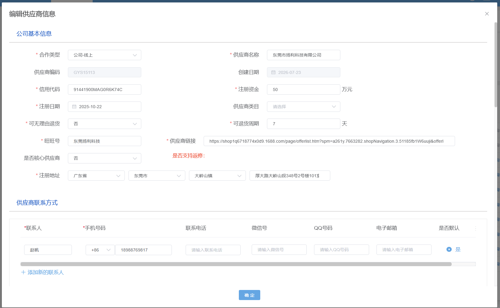
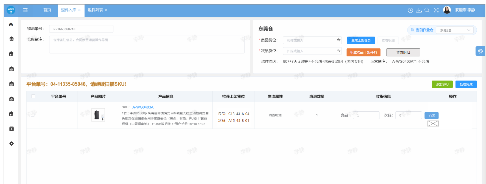
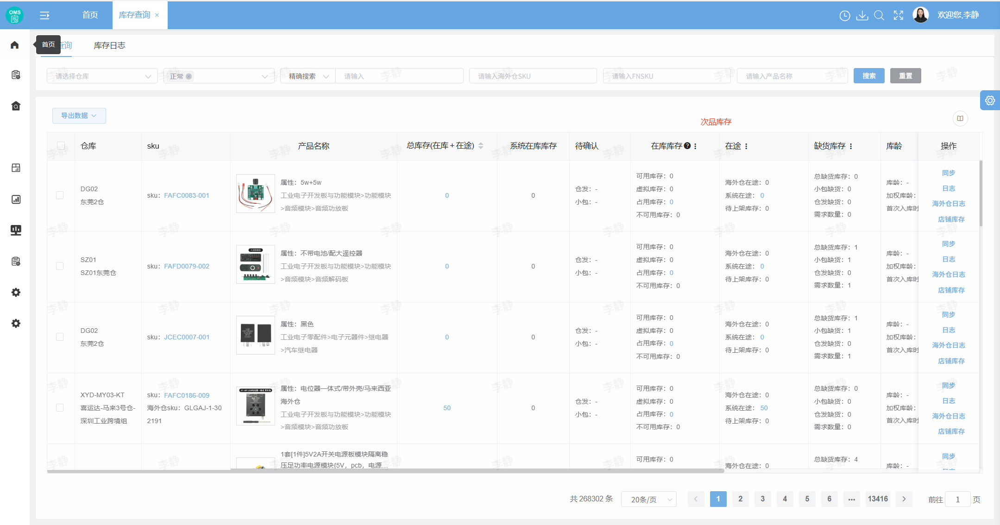
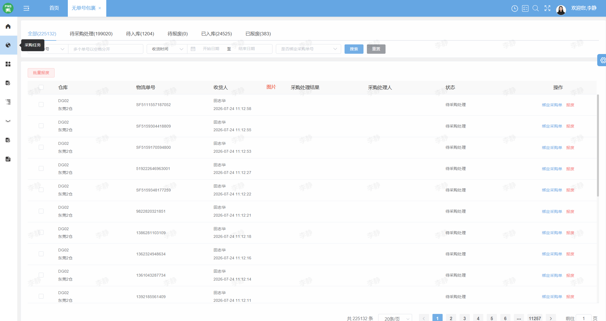
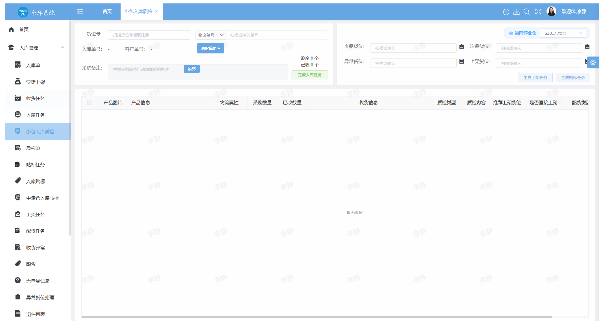
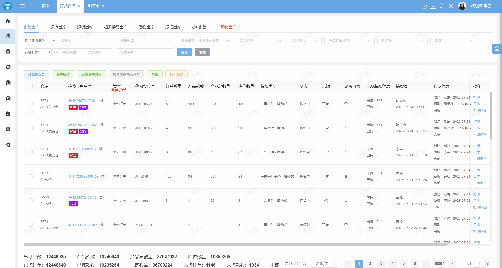

ERP 采购入库质检与退件次品处理需求文档
本需求覆盖正常采购来货的 PDA 收货与入库质检、退件次品质检与回传、次品处理池、返修出库及后续库存与财务闭环。
1. 范围与目标
1.1 业务痛点
- 退件收货发现次品后缺少统一的上架/暂存判断和可追溯单据。
- 采购无法按供应商 + SKU + 仓库聚合处理数量，返修、报损与结算容易脱节。
- 仓库上传的次品图片分散在退件单中，处理池和详情页缺少快速查看入口。
- 入库质检结果、次品库存、返修出库和返修入库之间需要统一状态和数据口径。
1.2 本次不做
- 不重做现有退件收货、仓库出库和供应商对账底层流程，只补充业务字段、状态串联和入口。
- 不在次品处理池自动替采购决定返修或报损；系统提供规则建议和校验。
- 不在本版本扩展完整财务结算规则；赔款、抵扣账单的财务字段以本需求定义的最小闭环为准。
2. 业务流程图
本需求必须拆成两条独立链路：第一条是正常采购来货的 PDA 收货、PO 自动绑定、送货单高拍与识别；第二条是仓库退件次品的存放、处理池、返修/报损及库存流水闭环。
2.1 流程图一：正常采购来货收货与入库质检
关键原则：PDA 收货与 PO 绑定解耦；不能绑定 PO 时仍可完成收货记录；高拍仪送货单为每个采购来货的必拍凭证。
2.2 流程图二：仓库返修次品处理流程
库存流水边界：上架次品区返修出库=次品库存类型；供应商返修回货后正常入库=返修入库、良品；上架次品区报损=次品报损出库；次品暂存区不形成库存，方案不生成报损出库单。
3. 入库质检功能调整
本模块面向正常采购来货，覆盖 PDA 收货、入库单绑定、送货单拍摄、PO 识别和质检提交。
3.1 正常采购来货：PDA 收货与 PO 绑定
| 场景 | 系统行为 | 收货结果 |
|---|---|---|
| 扫描到已有绑定关系的物流单号/PO 单号 | 加载已绑定入库单和采购单 | 按已绑定单据继续收货 |
| 系统没有绑定入库单 | 系统按 PO 查找入库单；若找到，自动绑定入库单并记录绑定来源 | 绑定成功后继续收货 |
| 系统没有绑定入库单，按 PO 未找到入库单 | 不阻断 PDA 收货 | 正常完成收货记录，后续在高拍仪送货单识别环节继续处理 |
3.2 高拍仪送货单与 PO 识别
| 触发 | 处理 | 异常回传 |
|---|---|---|
| 每个采购来货进入质检 | 必须通过高拍仪拍摄送货单，图片与本次采购来货/入库单关联 | 拍摄失败时阻止质检完成并提示重拍 |
| 当前已绑定入库单 | 保存送货单图片，直接进入质检 | 不再识别送货单上的 PO，不重复绑定 |
| 当前未绑定入库单，且提取到送货单 PO 单号 | 按 PO 查找入库单；找到后自动绑定入库单，再进入质检 | 保留 OCR 识别结果与绑定来源日志 |
| 当前未绑定入库单，无法提取 PO 单号 | 收货记录不回滚 | 将送货单回传采购员，由采购员绑定 PO 单号并关联入库单 |
3.3 质检提交校验
- 质检数量不得大于收货数量；合格数量 + 次品数量 = 质检数量。
- 每个采购来货必须有高拍仪送货单图片，图片与本次采购来货/入库单关联。
- 已绑定入库单的来货不再识别 PO；未绑定时必须完成 PO 识别或转采购员绑定。
- 送货单拍摄或必要的绑定信息缺失时，不允许完成本次质检提交。
4. 次品处理配置
4.1 配置模型
| 配置项 | 取值/规则 | 说明 |
|---|---|---|
| 规则名称 | 必填，长度限制沿用系统配置规范 | 用于列表识别与审计 |
| 条件类型 | SKU、平台、过去 X 天销量、单价区间、货值区间、供应商是否支持返修 | 不再提供库存类型条件；“供应商支持返修=是”才可命中上架次品区条件 |
| 过去 X 天销量 | 统计天数 X + 销量阈值；命中条件为销量大于阈值 | 天数和阈值必须为非负数，阈值可为 0 |
| 应用仓库 | 默认全部仓库；支持选择一个或多个具体仓库 | 规则只对所选仓库的质检数据生效 |
| 条件关系 | 组内 AND，组间 OR | 至少配置一个有效条件 |
| 处理建议 | 上架次品区 / 次品暂存区 | 同一优先级命中多条时按规则排序取值并记录命中规则 |
4.2 供应商主数据调整
| 模块 | 字段 | 取值/规则 | 用途 |
|---|---|---|---|
| 供应商管理 | 是否支持返修 | 是 / 否，默认值按现有供应商主数据初始化规则处理 | 参与次品配置命中；只有“是”才允许命中上架次品区条件 |

4.3 规则命中优先级
SKU 专属规则 ＞ 供应商规则 ＞ 全局默认规则；同级按配置排序，命中结果写入质检记录，后续配置变更不反算历史单据。
5. 退件模块：次品质检与次品回传
本模块面向仓库退件收货，与正常采购来货的入库质检流程独立。仓库在退件质检发现次品后，通过高拍仪留存次品图片，系统依据次品处理配置判断存放方式，并将数据回传次品处理池。
5.1 退件次品质检
| 场景 | 仓库操作 | 系统处理 |
|---|---|---|
| 退件收货 | 仓库按退件任务收货并进行质检 | 合格品按正常退件流程处理；次品进入次品质检分支 |
| 发现次品 | 将次品放置在高拍仪上拍照 | 图片关联退件单、SKU、仓库、质检批次和上传人 |
| 识别存放方式 | 查看系统建议并按要求存放 | 系统根据 SKU、销量、仓库、供应商是否支持返修等配置识别“上架次品区”或“次品暂存区”；供应商不支持返修时不得命中上架次品区条件 |
| 生成次品上架任务 | 关联订单号查询出库批次 | 若出库批次为采购批次，查询采购单对应供应商；若无法关联采购批次，则按默认供应商处理 |
| 推荐次品货位 | 根据供应商查询货位绑定关系 | 供应商已绑定次品货位时推荐该货位；未绑定时推荐空的次品货位 |
| 上架次品区 | 按推荐货位完成次品上架 | 上架完成后记录“次品库存-次品入库”流水，并回传次品处理池 |
| 次品暂存区 | 将次品放入暂存货位，记录实际数量 | 不形成次品库存，退件任务完成后回传次品处理池 |
5.2 仓库作业推荐货位逻辑
| 步骤 | 系统判断/查询 | 处理结果 |
|---|---|---|
| 1. 查询出库批次 | 根据关联订单号查询对应出库批次 | 判断当前出库批次是否为采购批次 |
| 2. 查询供应商 | 若出库批次为采购批次，查询采购单对应供应商 | 获取本次次品上架任务的供应商 |
| 3. 查询货位绑定 | 查询该供应商在当前仓库是否绑定次品货位 | 返回供应商次品货位绑定结果 |
| 4. 推荐货位 | 已绑定供应商次品货位 | 推荐该供应商绑定的次品货位 |
| 5. 推荐货位 | 未绑定供应商次品货位 | 推荐当前仓库可用的空次品货位 |
| 6. 仓库上架 | 仓库确认推荐货位并执行上架 | 完成上架后记录“次品库存-次品入库”流水，并回传次品处理池 |
5.3 仓库退件入库操作页面调整
退件入库操作页面按仓库现有作业页面调整：仓库作业区展示推荐货位和上架动作，SKU 收货信息中提供次品数量旁的拍照入口，并支持查看当前次品移动货位的明细数据。
| 页面位置 | 调整内容 | 交互与校验 |
|---|---|---|
| 仓库作业信息区 | 新增“推荐次品货位” | 系统按照供应商次品货位绑定规则生成推荐值；已绑定时展示供应商次品货位，未绑定时展示空的次品货位，并允许仓库扫描或手工确认实际次品货位 |
| 仓库作业信息区 | 新增“生成次品上架任务”按钮及“查看明细”按钮 | 点击生成次品上架任务后创建当前退件次品的移动货位任务；点击查看明细，打开当前次品移动货位任务的全部明细数据 |
| SKU 行·收货信息 | 在次品数量旁新增“拍照”按钮 | 点击后调用高拍仪拍照接口；接口返回图片后自动绑定退件单、平台单号、SKU、仓库和当前质检批次 |
| SKU 行·图片入口 | 展示已拍图片缩略图或图片数量 | 点击图片或图片数量打开图片查看器，支持多张图片左右切换、关闭和重新拍照 |
| 处理完成校验 | 校验次品货位、上架任务和次品图片 | 次品数量大于 0 时必须完成拍照；存放方式为上架次品区时，必须确认次品货位并生成上架任务后才能完成退件处理 |
生成次品上架任务与查看明细
| 操作 | 触发条件 | 系统处理 |
|---|---|---|
| 生成次品上架任务 | 次品数量大于 0，且存放方式为上架次品区；次品货位已确认 | 按退件单、平台单号、SKU、次品数量和确认货位生成次品移动货位任务；生成成功后按钮状态更新，并保留任务编号 |
| 查看明细 | 当前次品移动货位任务已生成，或已有任务明细 | 打开明细弹窗/抽屉，展示当前次品移动货位上的全部明细：任务编号、仓库、供应商、平台单号、退件单号、SKU、次品数量、来源货位、目标次品货位、任务状态、操作人和操作时间 |
高拍仪拍照接口约定
| 阶段 | 请求/返回内容 | 处理要求 |
|---|---|---|
| 调用拍照 | 传入退件单号、SKU、仓库、质检批次号、操作人 | 打开高拍仪设备并执行拍照；失败时提示重试，不影响已保存图片 |
| 拍照返回 | 图片 ID、图片地址、缩略图地址、拍摄时间、操作人 | 保存图片关联关系，并立即刷新当前页面缩略图 |
| 图片查看 | 点击缩略图或图片数量 | 打开图片查看器，支持左右切换和关闭 |

5.4 次品回传与库存流水
| 结果 | 系统动作 | 数据去向 |
|---|---|---|
| 合格品 | 按正常退件流程继续处理 | 正常退件库存/入库流水 |
| 次品：上架次品区 | 完成次品上架后，同时执行库存流水记录和处理池回传 | 库存：次品库存；流水类型：次品入库；随后回传次品处理池 |
| 次品：次品暂存区 | 退件任务完成后回传处理池 | 不形成次品库存，不生成次品入库流水，仅记录暂存货位和数量 |
6. 次品处理池
6.1 页面结构与字段
| 区域 | 字段/操作 | 规则 |
|---|---|---|
| Tab | 待处理、已处理 | 已处理查看已经发起处置的记录，不展示无关平台字段 |
| 筛选 | 仓库、供应商、SKU、次品存放类型、更新时间、状态 | 支持重置、空结果和加载反馈 |
| 主列表 | 供应商、SKU、仓库、次品存放类型、待处理数量、采购成本金额、历史处理次数、更新时间 | 数量统一展示待处理数量，不拆分上架/暂存数量 |
| 图片列 | 次品图片缩略图/数量 | 打开当前 SKU 对应退件单的仓库上传图片 |
| 操作 | 查看详情、设置处理方案、查看历史处理 | 详情使用抽屉，方案使用弹窗，高风险操作二次确认 |
6.2 图片查看器
- 图片来源：当前 SKU 对应退件单的仓库上传次品图片；同一 SKU 允许聚合多张图片。
- 查看器展示图片、退件单号、上传时间、图片说明和当前序号。
- 支持上一张、下一张、鼠标左右按钮、键盘 ←/→ 切换，Esc 关闭。
- 详情抽屉“库存来源”区域复用同一图片查看器，点击任一图片可直接打开。
6.3 详情抽屉
| 区块 | 展示内容 |
|---|---|
| 汇总 | 供应商、SKU、仓库、次品存放类型、待处理数量、采购成本摘要、历史处理次数 |
| 库存来源 | 来源单号、收货时间、收货数量、次品数量、当前货位/暂存货位、仓库上传图片 |
| 历史处理 | 处理时间、来源类型、数量、方案、金额、发起人、关联单据、审核状态、处理结果 |
7. 设置处理方案
7.1 公共信息
| 字段 | 默认值 | 交互 |
|---|---|---|
| 供应商 | 默认加载当前记录供应商 | 可下拉选择当前 SKU 对应的全部供应商；切换后刷新地址信息 |
| SKU / 次品数量 / 总成本 | 当前处理池记录 | 只读；数量不可超过待处理数量 |
| 次品存放类型 | 当前记录 | 只读；决定报损二级方案的可用范围 |
| 处理方式 | 未选择 | 已上架次品区：一级选择返修/报损；次品暂存区：直接选择报损/抵扣账单/索赔 |
7.2 返修
- 返修方案仅保留“返修入库、返修换货”。返修换货必须录入换货 SKU 和数量，并展示换货 SKU 单价、金额。
- 供应商地址信息默认带出：收件人、收件电话、收件人地址；字段支持编辑，编辑值仅作用于当前返修单快照。
- 维护返修数量、预估运费、运费承担方、返修费；最终运费/返修费在返修出库页确认。
- 成本比较值 = 返修费 + 公司承担的预估运费。采购总成本 > 1000 时比例达到 80%，采购总成本 ≤ 1000 时比例达到 60%，触发二次确认。
7.3 报损与二级方案
| 适用来源 | 二级方案 | 业务结果 |
|---|---|---|
| 已上架次品区 + 一级报损 | 报损 | 无任何挽损，直接生成报损出库单，不维护返修/赔款/抵扣字段 |
| 已上架次品区 + 一级报损 | 抵扣账单 | 生成报损出库单并流转仓库；同时记录抵扣金额，生成供应商对账待核对数据 |
| 已上架次品区 + 一级报损 | 赔款 | 生成报损出库单并流转仓库；同时记录赔款金额、流水、方式、状态、实际退款金额和凭证 |
| 次品暂存区 | 报损 | 只记录报损结果，不生成报损出库单，不产生库存流水 |
| 次品暂存区 | 抵扣账单 | 生成供应商对账单明细；不生成报损出库单 |
| 次品暂存区 | 索赔 | 只记录索赔/赔款记录；不生成报损出库单 |
7.4 单据与库存流水
| 存放类型/方案 | 生成单据 | 库存流水/财务流 |
|---|---|---|
| 次品上架 | 次品上架任务 | 按供应商上架完成后生成“次品库存-次品入库”流水 |
| 上架次品区 + 返修 | 返修出库单；供应商回货后由采购创建入库单 | 出库：次品库存类型的返修出库；回货：返修入库，良品 |
| 上架次品区 + 报损 + 报损 | 生成报损出库单，审核后流转仓库 | 仓库从次品区拣货报损，生成次品类型的报损出库流水 |
| 上架次品区 + 报损 + 抵扣账单 | 生成报损出库单，审核后流转仓库 | 仓库从次品区拣货报损，生成次品报损出库流水；同时流转供应商对账模块 |
| 上架次品区 + 报损 + 赔款 | 生成报损出库单，审核后流转仓库 | 仓库从次品区拣货报损，生成次品报损出库流水；同时记录赔款金额、流水、方式、状态和凭证 |
| 次品暂存区 + 报损 | 不生成报损出库单 | 只记录处理结果，不加/减库存 |
| 次品暂存区 + 抵扣账单 | 不生成报损出库单 | 生成供应商对账单明细，不产生库存流水 |
| 次品暂存区 + 索赔 | 不生成报损出库单 | 只记录索赔结果，不产生库存流水 |
8. 其他出库-返修出库
该页面承接次品处理池生成的返修出库单，保持独立原型的页面边界，不覆盖原有出库原型。
| 模块 | 需求 | 状态 |
|---|---|---|
| 返修出库列表 | 按仓库、单号、创建人、审核状态、出库状态、创建时间筛选 | 待审核、待仓库作业、已出库、异常、已完成、审核拒绝、取消 |
| 详情抽屉 | 查看供应商、SKU、出库信息、返修方案、物流、收件人信息和关联单据 | 只读信息与可操作字段分层 |
| 物流绑定 | 录入/绑定物流单号，展示承运商和回程物流 | 返修出库完成后可进入返修入库 |
| 换货信息 | 维护换货 SKU、数量、单价和金额快照 | 金额按数量实时计算 |
| 财务信息 | 返修费、运费承担方、抵扣账单/赔款信息 | 最终费用在返修出库页确认 |
| 返修出库流水 | 审核通过后仓库到对应供应商次品货位拣货并发给供应商 | 库存流水类型为“次品库存-返修出库” |
| 返修回货入库 | 采购维护供应商回寄物流单号并创建仓库入库单；仓库正常收货、质检、贴标、上架 | 库存流水类型为“返修入库”，库存属性为良品 |
9. 关联模块需求调整
9.1 订单系统-库存查询模块调整
本项为订单系统库存查询模块的配套字段调整，用于补充次品库存查询和导出能力，不改变现有正常库存、在途库存和缺货库存的统计口径。
| 调整位置 | 调整内容 | 业务规则 |
|---|---|---|
| 库存查询列表 | 新增“次品库存”字段/列 | 按仓库 + SKU 展示当前次品库存数量，与正常库存、在途库存、缺货库存分开统计；无次品库存时展示 0 |
| 库存查询导出 | 导出字段新增“次品库存” | 导出文件增加与列表同口径的“次品库存”列，字段名称、仓库、SKU 和数量口径保持一致 |
| 查询与权限 | 沿用库存查询原有筛选、分页和权限 | 筛选结果与导出结果一致；用户只能导出其有权限查看的仓库数据 |

9.2 采购系统-无单号包裹模块调整
本项为采购系统无单号包裹模块的配套信息展示调整，用于让采购员在绑定处理时直接查看仓库拍摄的送货单图片。
| 调整位置 | 调整内容 | 业务规则与交互 |
|---|---|---|
| 无单号包裹列表 | 新增“图片”列 | 列表展示仓库上传的送货单图片缩略图或图片数量；暂无图片时展示“暂无图片” |
| 图片回传 | 回传展示仓库拍摄的送货单图片 | 仓库通过高拍仪完成拍照后，图片绑定无单号包裹、仓库、物流单号/包裹记录和拍摄时间，并回传采购系统 |
| 图片查看 | 点击图片列查看原图 | 打开图片查看器展示送货单原图、包裹单号、拍摄时间和上传仓库；同一包裹多张图片支持左右切换 |
| 绑定处理 | 采购员查看图片后绑定 PO | 图片仅作为识别和绑定辅助信息，不替代 PO 绑定结果；图片加载失败时提示重试并保留包裹处理入口 |

9.3 入库质检模块送货单拍照调整
小包入库质检和中转仓入库质检页面新增送货单拍照能力，统一留存仓库收货时的送货单凭证。
| 适用模块 | 调整内容 | 交互与数据规则 |
|---|---|---|
| 小包入库质检 | 新增“送货单拍照”按钮 | 点击调用高拍仪设备拍照接口；接口返回照片后绑定当前入库单、物流单号、仓库、质检批次和操作人 |
| 中转仓入库质检 | 新增“送货单拍照”按钮 | 复用同一高拍仪接口和图片绑定规则，照片与当前中转仓入库质检记录关联 |
| 图片查看 | 新增送货单图片查看入口 | 拍照成功后页面展示缩略图/图片数量；点击可查看送货单内容，支持多张照片左右切换 |
| 质检提交 | 保留拍照结果并参与提交校验 | 每次入库质检需留存送货单照片；拍照接口失败时提示重试，不影响已保存照片 |

9.4 仓库系统出库单与拣货任务调整
仓库系统新增返修出库类型，并在出库单、拣货任务中展示库存类型，支持次品库存返修出库生成拣货任务。
| 模块 | 调整内容 | 规则 |
|---|---|---|
| 出库单模块 | 新增“返修出库”出库类型 | 支持返修出库单创建、审核及生成拣货任务；从次品处理池发起的返修出库单按业务单据关联处理 |
| 出库单模块 | 新增“库存类型”字段 | 展示“良品/次品”，普通出库单默认良品；返修出库单按来源业务带出对应库存类型 |
| 拣货任务模块 | 新增“库存类型”字段 | 展示“良品/次品”，普通拣货任务默认良品；返修出库生成的拣货任务继承出库单库存类型 |
| 拣货任务模块 | 新增“返修出库”出库类型 | 支持按返修出库单生成、领取、拣货及完成任务，并可追溯关联出库单 |

9.5 拣货任务次品货位选择与缺货校验
| 场景 | 系统逻辑 | 处理结果 |
|---|---|---|
| 次品库存拣货 | 拣货任务库存类型 = 次品 | 只能推荐货位属性为“次品”的货位；禁止推荐良品货位 |
| 良品库存拣货 | 拣货任务库存类型 = 良品 | 沿用现有良品货位推荐逻辑，默认库存类型保持良品 |
| PDA 操作缺货 | 次品拣货任务提交缺货时，按 SKU + 仓库 + 次品库存类型查询其他货位 | 仅校验其他次品货位是否存在可拣库存；不得将良品货位库存作为可拣库存提示 |
| 缺货提示 | 存在其他次品货位库存 | 提示仓库前往其他次品货位拣货；不存在时才允许按缺货流程提交 |
9.6 其他入库模块调整
其他入库模块新增“返修入库”入库类型，用于承接供应商完成返修后的回货入库。该类型沿用仓库正常收货、质检、贴标和上架作业，但库存流水单独记录为返修入库。
| 调整位置 | 调整内容 | 业务规则 |
|---|---|---|
| 入库类型 | 新增“返修入库” | 其他入库新建页面的入库类型下拉新增“返修入库”；原有入库类型和处理流程不受影响 |
| 单据关联 | 关联返修出库单/次品处理记录 | 采购维护供应商回寄物流单号后创建返修入库单，支持关联原返修出库单、供应商、SKU 和返修数量 |
| 仓库作业 | 正常收货、质检、贴标、上架 | 仓库按普通入库作业完成收货与质检；质检不合格时按现有异常/次品规则处理 |
| 库存结果 | 生成返修入库库存流水 | 质检合格并上架后，库存流水类型为“返修入库”，库存属性为良品；数量不得超过返修入库单待收数量 |
10. 数据、状态与权限
10.1 核心数据对象
| 对象 | 关键字段 | 生命周期 |
|---|---|---|
| 质检批次 inspection_batch | 单据、仓库、供应商、SKU、收货时间、质检数量、合格数量、次品数量、状态 | 待质检 → 质检完成/异常 |
| 供应商主数据 supplier_master | 供应商 ID、是否支持返修、仓库维度次品货位绑定 | 供应商信息维护 → 生效/停用 |
| 次品来源 defect_source | 来源类型、货位、待处理数量、库存属性、图片关联 | 待放置 → 暂存/已上架 → 已处理 |
| 配置规则 defect_rule | 条件组、关系、应用仓库、建议去向、优先级、启停状态 | 草稿 → 生效 → 停用 |
| 处理记录 defect_disposition | 处理方式、二级方案、供应商、地址快照、数量、金额、关联单据、结果 | 待确认 → 审核中 → 作业中 → 已完成/异常 |
| 图片附件 defect_image | SKU、退件单号、对象 ID、URL、说明、上传人、上传时间、排序 | 上传 → 可见 → 归档 |
10.2 权限建议
| 角色 | 查看 | 编辑/提交 | 审核/作业 |
|---|---|---|---|
| 仓库收货员 | 本人/所属仓库质检与图片 | 质检结果、次品去向、图片 | 次品上架、暂存 |
| 采购 | 所属业务范围处理池与历史 | 处理方案、供应商、返修地址、结算字段 | 发起返修/报损 |
| 采购主管/审核人 | 待审核单据 | 审核意见 | 返修/报损审核 |
| 仓库出库员 | 审核通过的出库单 | 拣货、出库、物流绑定 | 返修/报损出库 |
| 系统管理员 | 全量数据 | 配置规则、权限 | 不替代业务审核 |
11. 验收标准
| 编号 | 验收场景 | 通过标准 |
|---|---|---|
| INSP-001 | PDA 收货与入库单绑定 | 已绑定入库单直接使用；未绑定时按 PO 查找入库单，找到则自动绑定，未找到则正常完成收货记录 |
| INSP-002 | 高拍仪送货单 | 每个采购来货必须拍摄送货单；已绑定入库单不识别 PO；未绑定时识别送货单 PO，无法提取则回传采购员绑定 |
| INSP-003 | 提交入库/退件质检 | 合格数 + 次品数 = 质检数；数量不合法或采购来货缺少送货单图片时阻止完成 |
| INSP-004 | 命中次品规则 | 支持 SKU、平台、过去 X 天销量、单价、货值、应用仓库和供应商是否支持返修；组内 AND、组间 OR；供应商支持返修=是才可命中上架次品区条件 |
| SUP-001 | 供应商返修能力 | 供应商模块新增“是否支持返修”字段，支持是/否维护，并参与次品配置命中判断 |
| LOC-001 | 次品货位推荐 | 关联订单号查询出库批次；采购批次查询采购单供应商；有供应商次品货位推荐绑定货位，无绑定时推荐空的次品货位 |
| INSP-005 | 次品去向与入库流水 | 上架完成后产生“次品库存-次品入库”流水并回传处理池；暂存记录货位且不形成库存；不允许现场直接丢弃 |
| IMG-001 | 列表查看图片 | 图片列展示当前 SKU 退件单图片，左右切换、序号、退件单号、时间和说明正确 |
| IMG-002 | 详情查看图片 | 详情抽屉库存来源区域可打开同一查看器，键盘左右键和 Esc 可用 |
| OMS-001 | 库存查询次品库存 | 库存查询列表新增“次品库存”字段；导出文件同步包含该字段，列表与导出口径一致 |
| PMS-001 | 无单号包裹送货单图片 | 无单号包裹列表新增“图片”列，展示仓库回传的送货单图片；点击可查看原图并支持多图切换 |
| WMS-001 | 入库质检送货单拍照 | 小包入库质检和中转仓入库质检均可调用高拍仪拍照、回传并查看送货单图片 |
| OUT-002 | 返修出库拣货任务 | 出库单和拣货任务支持“返修出库”类型及“库存类型”字段，普通任务默认良品，次品返修任务继承次品类型 |
| PICK-001 | 次品货位推荐与缺货 | 次品任务只推荐次品货位；PDA 缺货只校验其他次品货位库存，不校验良品货位库存 |
| IN-REPAIR-001 | 返修入库类型 | 其他入库模块支持“返修入库”类型；完成收货、质检、贴标、上架后生成“返修入库”流水，库存属性为良品 |
| POOL-001 | 处理池聚合 | 按供应商 + SKU + 仓库 + 存放类型聚合，待处理数量不拆分上架/暂存 |
| PLAN-001 | 供应商选择 | 默认当前供应商；下拉仅展示当前 SKU 对应供应商；切换后地址跟随切换 |
| PLAN-002 | 返修地址 | 返修时默认带出收件人、电话、地址，并可编辑且保存当前单据快照 |
| PLAN-003 | 上架区报损方案 | 必须选择报损/抵扣账单/赔款；三种二级方案均生成报损出库单并产生次品报损出库流水，抵扣账单追加对账明细，赔款追加赔款记录 |
| PLAN-004 | 暂存区方案 | 报损/抵扣账单/索赔均不生成报损出库单；仅抵扣账单生成供应商对账明细，其余只记录 |
| HIS-001 | 历史处理 | 可查看历史次数、每次方案、数量、金额、单据、审核状态和结果，历史记录只读 |
| OUT-001 | 返修出库闭环 | 处理池发起的返修单可进入审核、按供应商次品货位拣货、返修出库、采购维护回寄物流、仓库返修入库良品 |
12. 待确认与研发拆解
12.1 业务待确认
- 送货单识别到 PO 单号但按 PO 未找到入库单时，是否继续保持收货记录并转采购员绑定。
- 次品图片的最大数量、大小、存储有效期及权限隔离规则。
- 高拍仪或 OCR 服务异常时，是否允许人工上传送货单并继续质检。
- 供应商地址数据的来源服务、默认地址标识、地址失效后的兜底策略。
- 返修入库后库存属性、成本重算和供应商对账的最终财务口径。
12.2 研发任务拆分建议
| 阶段 | 任务 | 依赖 |
|---|---|---|
| P0 数据与质检 | 质检批次字段、数量校验、次品图片、质检状态 | 入库/退件单现有数据模型 |
| P0 规则配置 | 销量条件、应用仓库、条件组计算、命中记录 | 销量、仓库、SKU 主数据 |
| P0 处理池 | 聚合查询、图片列、详情抽屉、历史记录 | 次品来源与图片对象 |
| P1 方案与单据 | 供应商选择、地址快照、返修/报损二级方案、幂等提交 | 供应商地址、出库单、对账服务 |
| P1 返修闭环 | 返修出库、物流绑定、返修入库、费用确认 | 现有其他出库作业链路 |
| P2 监控与报表 | 处理闭环率、超期处理量、图片上传失败、规则命中统计 | 埋点与数据平台 |
附录：在线原型
| 名称 | 链接/路径 |
|---|---|
| 次品处理池 v4（图片与方案优化版） | 在线原型 |
| 其他出库-返修出库 v2 | 在线原型 |